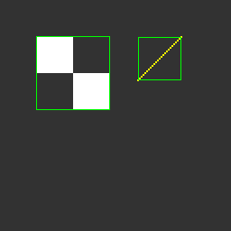

基本資料與作業說明
Lab7 目的、影像處理背景、基本設計方向。
開啟 HTML ↗
點選卡片即可開啟對應 HTML 頁面。
Lab7 目的、影像處理背景、基本設計方向。
開啟 HTML ↗更完整的設計描述與架構說明。
開啟 HTML ↗系統功能、演算法與 RTL 設計細節。
開啟 HTML ↗附上 final drawBbox_result_p4.bmp 與流程圖。
開啟 HTML ↗說明 clk、memory interface、done 與寫入流程。
開啟 HTML ↗所有檔案納入檢查與 coverage 說明。
開啟 HTML ↗Clock period、area、timing report 與 terminal result。
開啟 HTML ↗register boundary、resource sharing 與 datapath 最佳化。
開啟 HTML ↗由 Python 演算法驗證到 Verilog RTL 實作的學習心得。
開啟 HTML ↗.tar 打包、Makefile 指令與 Moodle 提交說明。
開啟 HTML ↗從數學式、Python 影像驗證到 Verilog 硬體化。
開啟 HTML ↗作業繳交項目與不可上傳項目說明。
開啟 HTML ↗DUT、testbench、ImgROM、AnsSRAM 與資料流圖解。
開啟 HTML ↗RAM read/write 波形與介面操作說明。
開啟 HTML ↗完成/未完成、缺什麼、如何補的總表。
開啟 HTML ↗Lab7 的重點是把影像演算法轉成可合成的 RTL 控制流程。
若圖片路徑存在，首頁會直接顯示 P1~P4 final overlay；若不存在，仍可正常使用報告連結。



本設計採單一 drawBbox.v 整合版本；若未使用外部 submodule，提交時可只放主 Verilog 檔案與必要報告。
P1~P4 全部通過，Total errors = 0。
查看 Terminal Result ↗若 drawBbox.v 內呼叫外部 module，必須一併繳交；若全部整合於 drawBbox.v，則避免檔案遺漏風險。
查看 Checklist ↗正式上傳 Moodle 應使用 .tar 格式，並確認檔案階層符合 Lab7 要求。
查看 Submission ↗